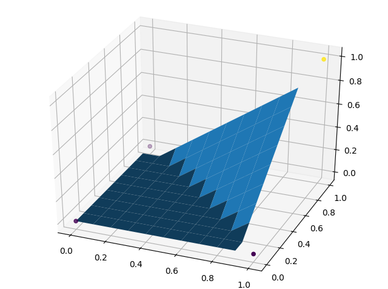
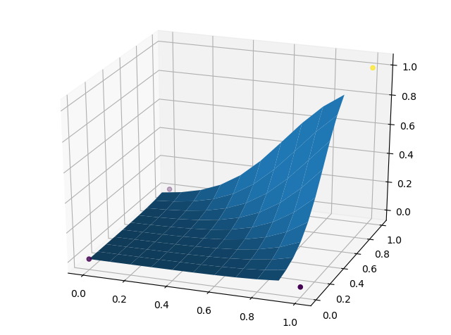

Tensorflow , 感知机 , 线性回归
首先还是一样，导入需要的库。因为要画 3D 的图，需要额外导入 Axes3D。
import numpy as np |
设置超参数及训练所需数据
LEARNING_RATE = 0.08 |
如果不带激活函数的话，训练结果会收敛于 [-0.25, 0.25, 0.25, 0.75]，虽然可以算是训练成功了，不过我不满意。将激活函数函数设为 tf.nn.relu 之后，训练结果就很不错了，很快就收敛到 [0, 0, 0, 1]。
X = tf.placeholder(tf.float32, (None, 2)) |
开始训练：
with tf.Session() as sess: |
善后，画画图
# 仍在 with 里边 |
最后可以发现，这个平面已经拟合得很好了：

有趣的是，如果激活函数选用 tf.nn.sigmoid，这个平面将会是这样的：

Keras 封装了很多方便的模块，而且 tf.keras.layers.Dense 直接对应了 activation(WX + b)。可以不用自己去维护那些权重和偏置值，很方便。
import numpy as np |